Hello, It's Me
Building intelligent systems through Machine Learning, Deep Learning & Generative AI — turning data into real-world impact.
Who I Am
I am a passionate AI Engineer with a strong foundation in Machine Learning, Deep Learning, and Natural Language Processing, specializing in designing and deploying intelligent systems that solve real-world problems. My expertise spans Generative AI, Computer Vision, and Large Language Models.
As a Smart India Hackathon 2024 Finalist, I have demonstrated the ability to engineer AI-driven applications that deliver measurable impact — from research and model development through to deployment, optimization, and monitoring.
Proficient in Python, PyTorch, TensorFlow, OpenAI API, LangChain, Hugging Face, Power BI, and SQL, I build end-to-end AI pipelines that transform ideas into reality.
Internships
Projects
Publications
Finalist 2024
My Journey
Post Graduate Certificate Programme in Big Data Analytics
Score: 78% | CCPP ID: PB0146
What I Work With
Python, SQL, R, Java
Scikit-learn, TensorFlow, Keras, PyTorch
Pandas, NumPy, EDA, Feature Engineering
NLTK, spaCy, Transformers, OpenCV, YOLO
LangChain, LLaMA, OpenAI API, Gemini, Hugging Face, CrewAI, AutoGPT
Few-shot, Chain-of-Thought, RAG, Prompt Tuning
Matplotlib, Seaborn, Power BI, Tableau
Flask, FastAPI, Streamlit
AWS, GCP, Git, GitHub, CI/CD
MySQL, PostgreSQL, MongoDB, SQLite, HDFS
Apache Kafka, Spark, Airflow, HDFS
Jupyter, VS Code, Anaconda, Google Colab, Raspberry Pi
What I've Built
Engineered an end-to-end ML and GenAI pipeline on a large-scale food-tech dataset to transform fragmented market data into actionable business intelligence. Built dual-track Scikit-Learn ensemble workflows (Random Forest, Gradient Boosting, Stacking) for rating forecasting and market segmentation. Embedded an interactive RAG-backed LLM chatbot enabling natural language queries over complex operational analytics.
Deployed an AI-powered postal tracking system that improved service efficiency by 30%. Integrated live analytics for crowd management and service time tracking with an intuitive dashboard. Selected as a Top 5 Finalist in Smart India Hackathon 2024.
Upgraded an AI-powered surveillance system for automatic helmet and number plate detection using YOLO and CNNs. Integrated real-time video processing and OCR for LPR. Developed a real-time monitoring dashboard for automated penalty enforcement.
Machine learning system to automatically classify resumes into job-specific categories. Applied NLP preprocessing (tokenization, TF-IDF) and trained multiple models including optimized Logistic Regression and Random Forest. Deployed as a Streamlit web app for real-time classification.
Built a scalable dual-layer architecture ingesting 10,000+ events/sec via Apache Kafka alongside HDFS distributed storage. Distributed ETL with Spark reduced KPI processing by 60%. Airflow automates 100% of DAG orchestration; Tableau dashboards deliver real-time recruitment and salary insights across 50+ regions.
Recognition
Top 5 nationwide for AI-Powered Postal Tracking System
"AI-powered Traffic Enforcement" — UGC-CARE-approved journal
Published research in international conference proceedings
Selected for state-level AI and data science innovation showcase
Presented AI and data science innovations at the Giant Metrewave Radio Telescope
Amazon Web Services — Cloud fundamentals
Professional certification in data analytics
Professional certification in data science
RPA certification by Proazure Software Solutions
Full stack web development certification
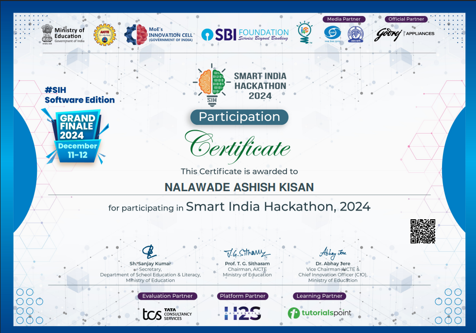
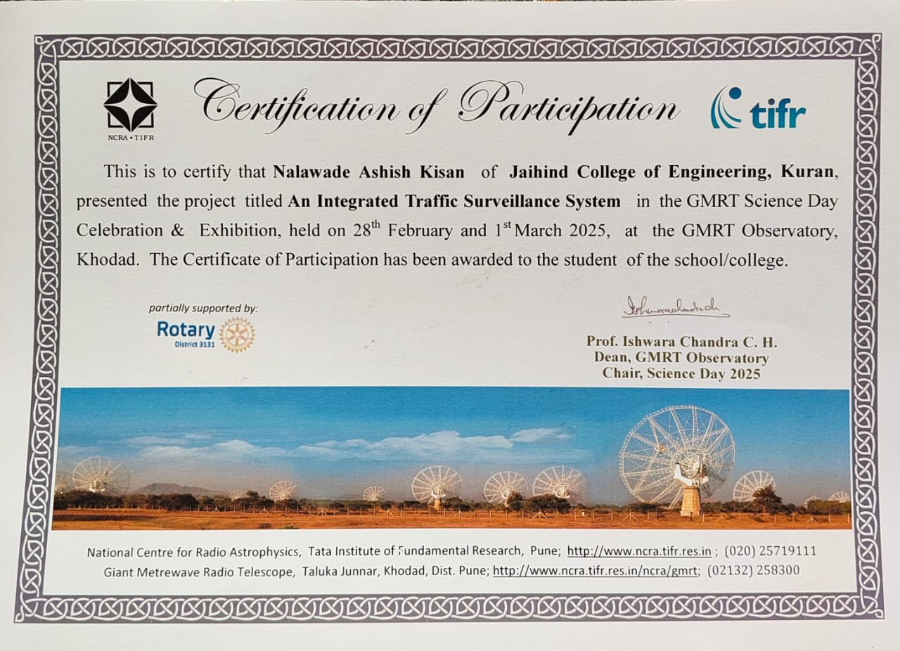
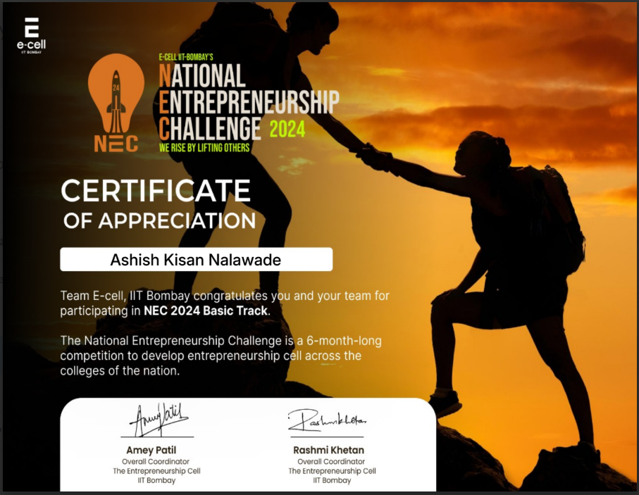
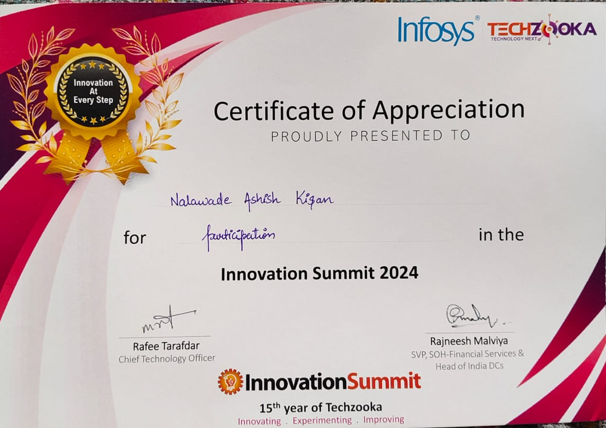
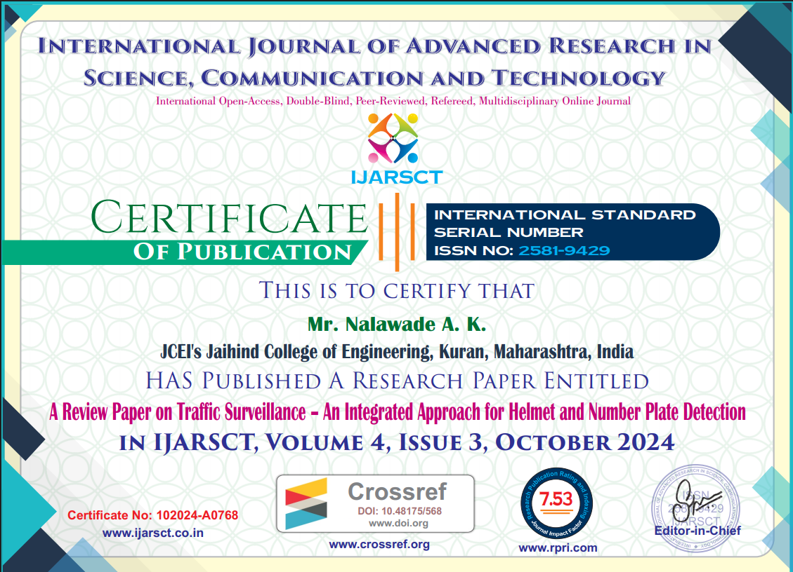
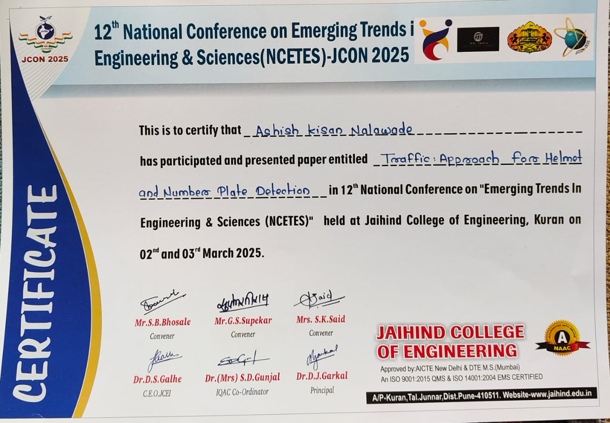
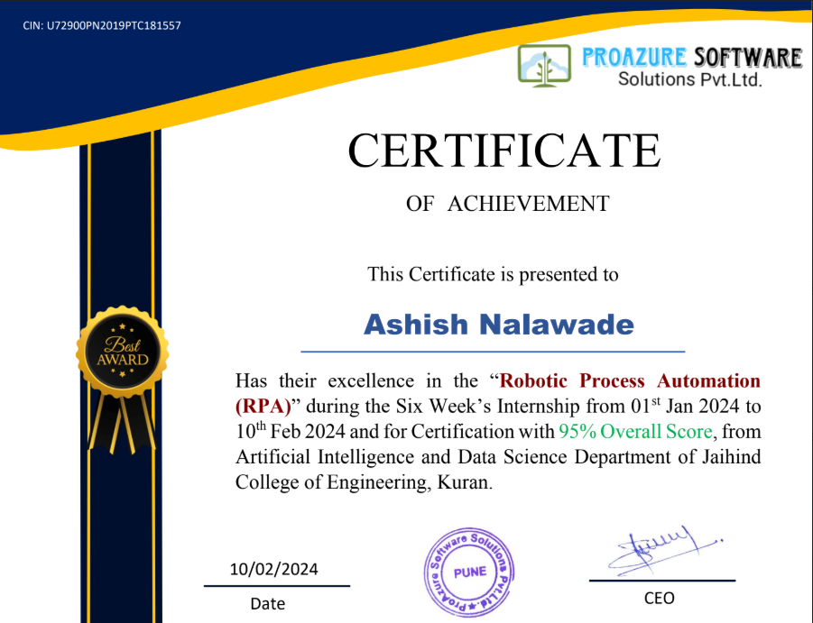
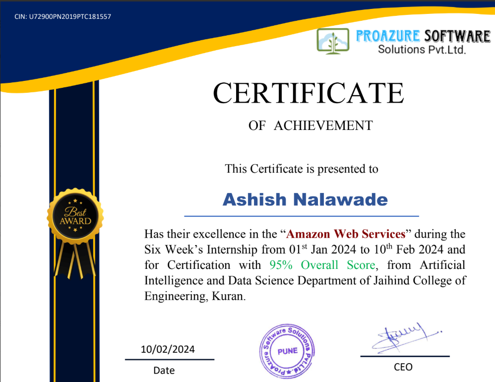
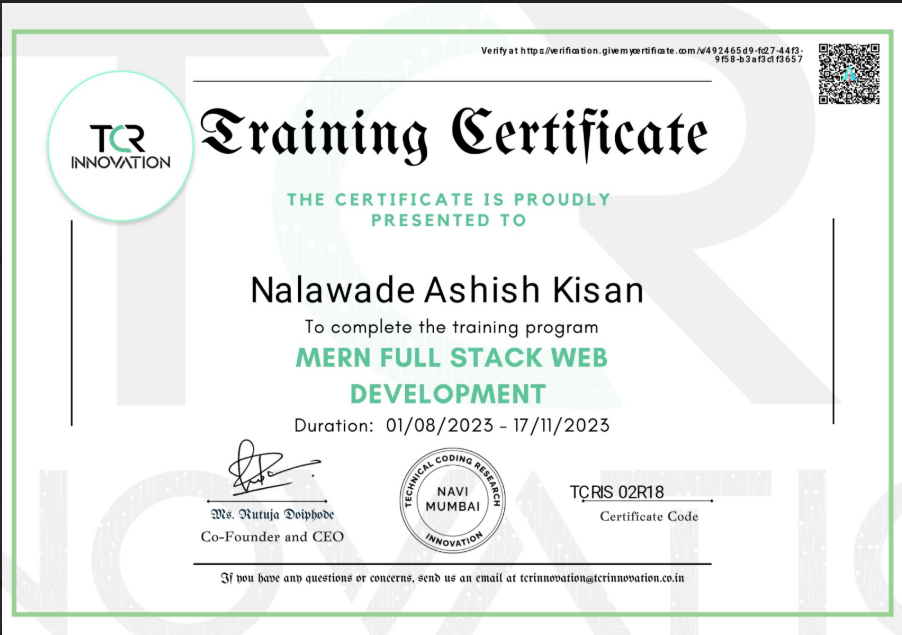
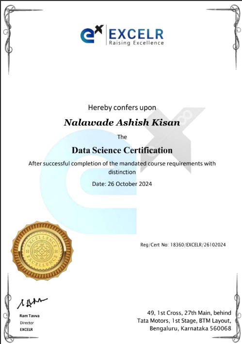
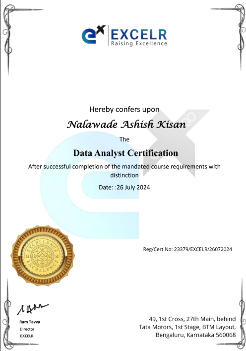
Get In Touch
Open to opportunities, collaborations, and interesting AI conversations.